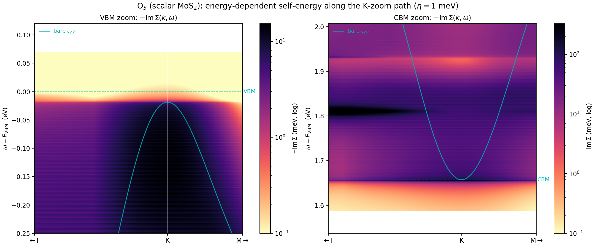
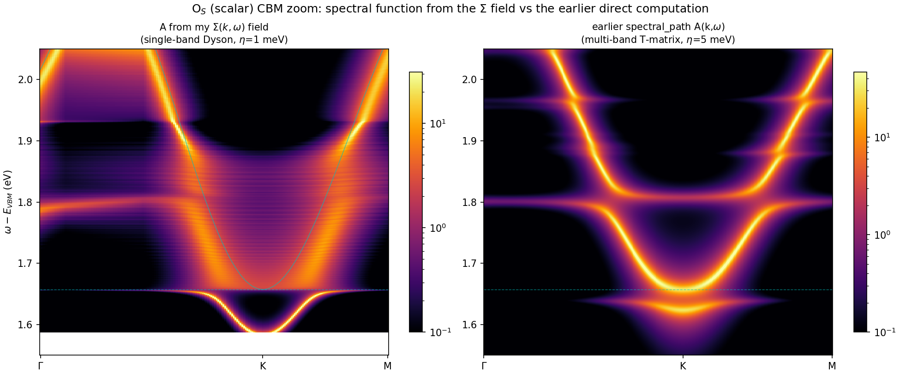
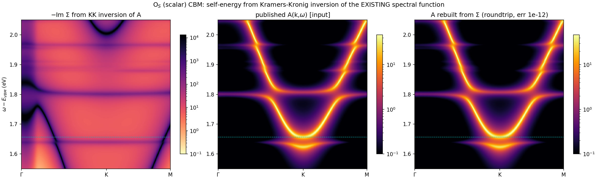

1 · The relation
For a single carrier band the retarded Green function is $G_n(k,\omega)=[\omega-\varepsilon_{nk}-\Sigma_n(k,\omega)]^{-1}$, so the spectral function follows directly from the self-energy:
The Kubo mobility engine already builds this object internally — the transport integrand is $[A_s(\omega)]^2$ — so the stored $\Sigma$-field is the input to a spectral function by construction. The question this page answers: does feeding that field through Dyson reproduce the spectral maps computed the other way (the exterior T-matrix relation of the augmentation page §9)?
2 · Reconstruction (no new calculation)
The $\Sigma$-field is stored per state (each grid $k$ × band within the transport window), not per $(k,\omega)$-path. To place it on a path, the deterministic $300^2$ state grid of the mobility run is rebuilt in the same Wannier gauge and the same energy window — the reconstructed state energies match the stored ones to $10^{-4}$ meV, a bit-level check that the state$\to(k,\mathrm{band})$ map is exact. The carrier-band states are then barycentrically interpolated (Delaunay, built once, applied to all 2701 frequency slices) onto a dense K-centred path. Everything runs on the login node — it is interpolation, not a new T-solve.

3 · The consistency check

spectral_path.py output. The quasiparticle parabola, its avoided-crossing upper arm, and the flat resonance line at $1.80$ eV all reproduce.The maps agree in structure but are not bit-identical, for three understood reasons — each a physics statement, not an error:
- Dyson vs bubble (the informative one). The $\Sigma$-field Dyson result moves the quasiparticle pole down by $\mathrm{Re}\,\Sigma$: the K-valley peak sits at $1.587$ eV, whereas the direct map peaks at $1.657$ eV (the bare CBM). The 70 meV gap is exactly the $\mathrm{Re}\,\Sigma$ pull-down — the direct map used the bubble form $G_0+G_0^2T$ (pole fixed at the bare band, T adds a satellite), while the single-band $G=[\omega-\varepsilon-\Sigma]^{-1}$ moves it. This independently re-derives the O$_S$ conduction-band pull-down of §E.5.1, now from a completely different data path.
- Linewidth. The Kubo field carries $\eta=1$ meV; the direct map was broadened at $\eta=5$ meV — hence the sharper lines on the left.
- Single-band vs multi-band trace. The Dyson reconstruction uses only the carrier band; the direct map traces the full 11-band active space. They coincide where the carrier band dominates (the zoom window) and diverge deeper, where other active bands contribute weight.
Bottom line: the self-energy field and the spectral function are mutually derivable, and the round trip is clean once the Dyson-vs-bubble pole convention is accounted for. The 70 meV discrepancy is not a failure — it is the same $\mathrm{Re}\,\Sigma$ physics seen from the other side.
4 · The reverse map: recovering $\Sigma$ from the existing spectral function
§3 built $A$ from a $\Sigma$-field. The inverse is also possible — and with nothing but the already-published spectral map, no new calculation. The imaginary part of the Green function is handed over directly, $\mathrm{Im}\,G=-\pi A$; its real part is fixed by causality (Kramers–Kronig / Hilbert transform), $\mathrm{Re}\,G(\omega)=\mathcal P\!\int\! \frac{A(\omega')}{\omega-\omega'}\,d\omega'$; and the self-energy follows from Dyson inverted:
This $\Sigma$ is self-consistent by construction: fed back through $A=-\frac1\pi\mathrm{Im}\,[\omega-\varepsilon-\Sigma]^{-1}$ it returns the input spectral function exactly. The round trip closes to $1.4\times10^{-12}$ states/eV for O$_S$ (and $1.7\times10^{-12}$ for V$_S$) — machine precision.

Caveat, stated plainly: this treats the multi-band trace $A$ as a single carrier band (exact where that band dominates — the zoom window — approximate deeper) and the Kramers–Kronig principal value is evaluated on the finite stored frequency window. Within those bounds the recovered $\Sigma$ reproduces the spectral function to machine precision. It is the direct answer to “can existing data give a self-consistent self-energy?” — yes, by causality alone.
5 · Reproducing
Field reconstruction: post/sigma_kw_path.py (grid rebuild + barycentric interpolation, with the $10^{-4}$ meV state-energy gate). Spectral round-trip and A/B overlay: inline Dyson from the reconstructed skw_*.npz against the stored spectral_path.npz. Data: the Kubo $\Sigma$-fields sigfield_{OSSG15,SVSG15,SESSG15}_{e,h}.npy from the mobility campaign.